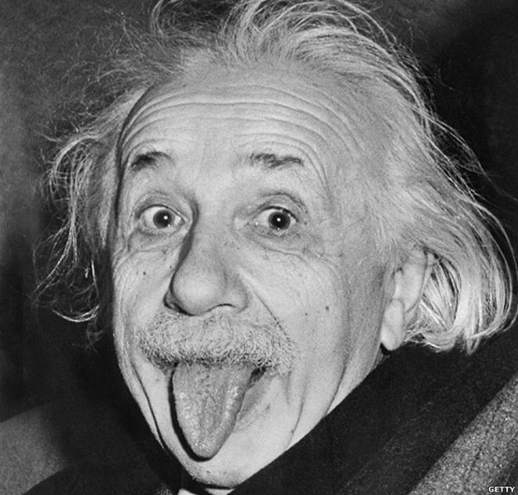

Galileo Galilei
fue un astrónomo, ingeniero, filósofo, matemático y físico italiano,
relacionado
estrechamente con la revolución científica. Eminente hombre del Renacimiento, mostró interés por
casi
todas las ciencias y artes.

Frida Kahlo
Magdalena Carmen Frida Kahlo Calderón, conocida mundialmente como Frida Kahlo, fue una pintora
mexicana
reconocida como un icono pop de la cultura de México. Su obra gira temáticamente en torno a su
biografía y
a su propio sufrimiento.

Abraham Lincoln
fue un político y abogado estadounidense que ejerció como decimosexto presidente
de los
Estados Unidos de América desde el 4 de marzo de 1861 hasta su asesinato el 15 de abril de 1865.

Albet Einstein
fue un físico alemán de origen judío, nacionalizado después suizo, austriaco y
estadounidense. Se le considera el científico más importante, conocido y popular del siglo XX.
Jesus de Nazaret
también llamado Cristo,Jesucristo o simplemente Jesús fue un predicador y
líder
religioso judío del siglo i. Es la figura central del cristianismo y una de las más influyentes
de la
historia.